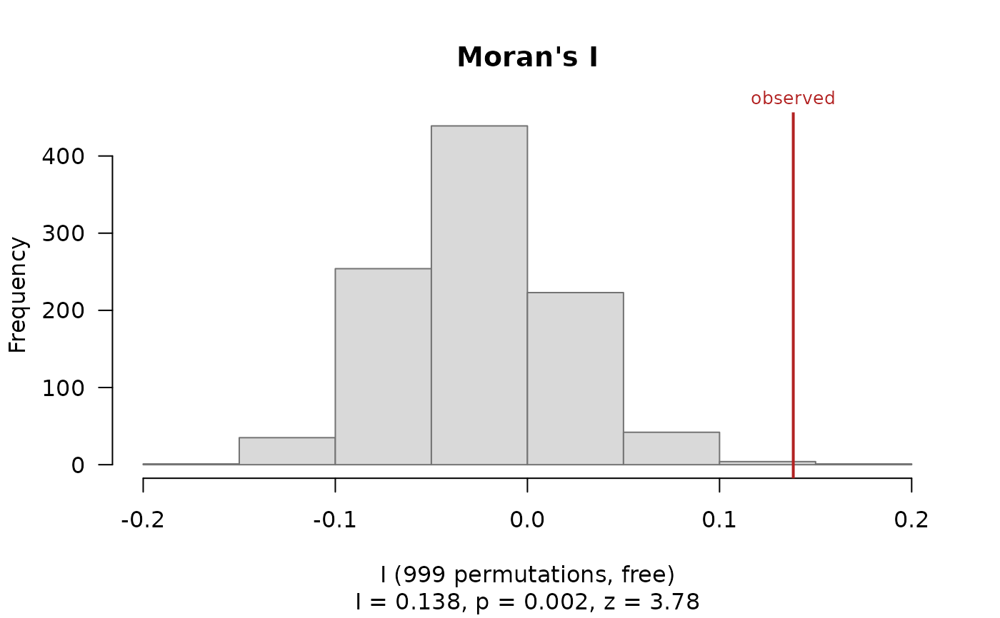

Tests whether a numeric variable, such as a taxon's abundance or a
sample's alpha diversity, is more similar (or less similar) at nearby
sites than at distant ones. Gives the same statistic and analytic tests
as PySAL's esda.Moran, with a permutation test computed in parallel C.
Usage
moran_i(
x,
space,
data = NULL,
style = "row",
alternative = "greater",
permutations = 999L,
seed = 0L,
cpus = n_cpus()
)Arguments
- x
The variable: a numeric vector with one value per sample, matched to the samples of
spaceby name when both have names, otherwise in the same order. Or, withdata, the name of one of its numeric columns, or a vector with one value per row ofdata.- space
The samples' positions, in one of three forms:
Spatial weights: a square numeric matrix, samples \(\times\) samples, where
space[i, j]is the weight of samplejas a neighbour of samplei: larger for closer samples, and 0 for samples that aren't neighbours. Weights must be finite and not negative, and needn't be symmetric. The diagonal is ignored, so that, for instance,1 / as.matrix(d)can be given as is.Geographic distances: a
distobject. The weights are the inverse distances, \(w_{ij} = 1 / d_{ij}\).Coordinates: a data frame, or a matrix that isn't square, with one row per sample and one numeric column per coordinate; or, with
data, the names of its coordinate columns. The weights are the inverse Euclidean distances. Project longitudes and latitudes first, or give great-circle distances as adist.
Samples are matched to
xanddataby the names inspace(its row names, or adist's labels) when it has them.- data
Optional sample metadata: a data frame with one row per sample, whose columns
xandspacecan name. Rows are matched to the samples ofspaceby row name, and rows for other samples are ignored; without row names, they must be in the same order. Default:NULL.- style
How the weights are transformed before use, as esda's
transformation(and spdep'sstyle):'row': row-standardised, so that each sample's weights sum to 1 (esda's and spdep's default);'binary': every non-zero weight becomes 1;'variance': variance-stabilising (Tiefelsdorf et al. 1999): each sample's weights are divided by the square root of their sum of squares, then all are scaled to sum to the number of samples;'none': as given.
Default:
'row'.- alternative
Which values of I count as more extreme than the observed one, for both the permutation and the analytic p-values:
'greater'(more positive: neighbours are more alike than by chance),'less'(more negative: neighbours are less alike), or'two.sided'. Default:'greater'.- permutations
The number of permutations. Default:
999. Alternatively, a matrix with one permutation of1:nper row, as frompermute::shuffleSet(), to use instead of random ones: each permutationpgives sampleithe value of samplep[i].- seed
An integer seed for the random permutations. The same seed gives the same p-values. Default:
0- cpus
How many parallel processing threads should be used. The default,
n_cpus(), is the CPU cores this R process may use, within any limits set on it. Results are the same for anycpus.
Value
A list of class c('ecodive_moran_i', 'ecodive_test'), with:
statistic: Moran's I,c(I = ...).p_value: The permutation p-value.z: The standardized effect size,(I - mean(i_perm)) / sd(i_perm).n_perm: The number of permutations.expected: The expected value of I under no spatial autocorrelation, \(-1 / (n - 1)\).sd_norm,p_value_norm: The standard deviation of I, and the analytic p-value of \((I - E[I]) / sd\), under the normality assumption (esda'sseI_normandp_norm).sd_rand,p_value_rand: The same under the randomisation assumption (esda'sseI_randandp_rand; spdep's default; andape::Moran.I()'ssdandp.value).style: How the weights were transformed.alternative:'greater','less', or'two.sided'.n: The number of samples.space_type: Whatspacewas, which says how the weights were made:'weights','distances'or'coordinates'.permutation:'free'or'supplied matrix'.
Attribute i_perm is a vector of the statistics of the permutations,
as esda's sim. as.data.frame() gives the main results as one row.
Details
Method
Moran's I (Moran 1950; Cliff & Ord 1981) of values \(x\) with spatial weights \(w_{ij}\) is $$I = \frac{n}{S_0} \frac{\sum_i \sum_j w_{ij} z_i z_j}{\sum_i z_i^2}$$ where \(z_i = x_i - \bar{x}\) and \(S_0 = \sum_i \sum_j w_{ij}\). It is near its expected value \(-1 / (n - 1)\) when values are arranged at random, positive when neighbours have similar values, and negative when they have dissimilar ones. With row-standardised weights, it is the slope of the regression of each sample's neighbours' mean value (the spatial lag) on its own.
The analytic tests compare \((I - E[I]) / sd\) with the standard normal
distribution, with the variance of I under one of two assumptions (Cliff
& Ord 1981): normality, where the values are a sample from a normal
distribution; or randomisation, where they are fixed and arranged at
random, and the variance depends on their kurtosis. The variance under
randomisation needs at least 4 samples. When the weights make I the same
for every arrangement of the values (such as equal weights between every
pair of samples), both standard deviations are 0, and their p-values are
NA.
The permutation test shuffles the values among the samples, holding the
weights fixed, and recomputes I. The p-value is the proportion of
permutations, counting the observed one, with an I at least as extreme:
\((1 + \#\{I_{perm} \ge I\}) / (1 + permutations)\) for
alternative = 'greater'. Permuted statistics within
sqrt(.Machine$double.eps) of the observed one count as ties.
A sample whose weights are all 0 (an "island", with no neighbours) is
kept, with a warning: it counts in \(n\) and in \(\bar{x}\), but
contributes nothing to the sums, as in esda. When x is the same for
every sample, I is undefined: the statistic and p-values are NA, with a
warning.
Speed, memory, and reproducibility
Only the packed lower triangle of the weights' symmetric part,
\((W + W^T) / 2\), is kept, which is all that I needs, and each
permutation is one pass over it: \(O(n^2)\) time per permutation.
Permutations run in parallel. They come from seed, not from R's random
number generator, so set.seed() has no effect, and p-values are
identical from run to run and for any number of cpus. They agree with
esda's (or spdep's) exactly when the same permutations are used.
Differences from esda.Moran
alternativesets the tail of both the analytic and the permutation p-values. esda's analytic p-values are two-sided by default (two_tailed), and its permutation p-value is one-sided in the direction of the observed I (the smaller tail).zis \((I - mean) / sd\) of the permuted values with the sample standard deviation, as for ecodive's other tests; esda'sz_simuses the population standard deviation.spacemay also be distances or coordinates, made into inverse-distance weights.Weights on the diagonal (self-weights) are ignored.
ape::Moran.I() gives the same I as style = 'row' (it row-standardises
the weights), with the standard deviation under randomisation (sd_rand)
and a two-sided p-value by default. spdep::moran.test() gives the same
I as style = 'row' for mat2listw()'s default style 'W', with the
variance under randomisation by default (randomisation = TRUE); its
adjust.n (the default) leaves islands out of \(n\), which moran_i()
doesn't.
References
Cliff, A. D., & Ord, J. K. (1981). Spatial Processes: Models and Applications. Pion.
Moran, P. A. P. (1950). Notes on continuous stochastic phenomena. Biometrika, 37(1/2), 17-23. doi:10.2307/2332142
Tiefelsdorf, M., Griffith, D. A., & Boots, B. (1999). A variance-stabilizing coding scheme for spatial link matrices. Environment and Planning A, 31(1), 165-180. doi:10.1068/a310165
See also
mantel(), which tests distances against distances.
Examples
# 40 sites, with a taxon more abundant towards the east.
set.seed(1)
sites <- data.frame(
row.names = paste0('S', 1:40),
east = runif(40, 0, 10),
north = runif(40, 0, 10) )
sites$abund <- rpois(40, 2 + sites$east)
# Inverse-distance weights from the coordinates.
res <- moran_i('abund', c('east', 'north'), sites)
res
#> Moran's I
#>
#> I = 0.1384, p = 0.002, z = 3.784
#> Permutations: 999 (free)
#>
#> Expected I: -0.02564
#> Under normality: sd = 0.04352, p = 8.195e-05
#> Under randomisation: sd = 0.04381, p = 9.056e-05
#> Weights: row-standardised inverse distances between coordinates
#> Alternative: greater (neighbours are more alike than by chance)
#> Samples: 40
plot(res)

# The same from a dist object of the distances.
geo <- dist(sites[, c('east', 'north')])
moran_i(sites$abund, geo)
#> Moran's I
#>
#> I = 0.1384, p = 0.002, z = 3.784
#> Permutations: 999 (free)
#>
#> Expected I: -0.02564
#> Under normality: sd = 0.04352, p = 8.195e-05
#> Under randomisation: sd = 0.04381, p = 9.056e-05
#> Weights: row-standardised inverse distances
#> Alternative: greater (neighbours are more alike than by chance)
#> Samples: 40
# Binary weights to each site's 5 nearest neighbours.
d <- as.matrix(geo)
w <- t(apply(d, 1, function (r) rank(r, ties.method = 'first') %in% 2:6))
dimnames(w) <- dimnames(d)
moran_i(sites$abund, w * 1)
#> Moran's I
#>
#> I = 0.3858, p = 0.001, z = 4.89
#> Permutations: 999 (free)
#>
#> Expected I: -0.02564
#> Under normality: sd = 0.087, p = 1.124e-06
#> Under randomisation: sd = 0.08758, p = 1.312e-06
#> Weights: row-standardised
#> Alternative: greater (neighbours are more alike than by chance)
#> Samples: 40